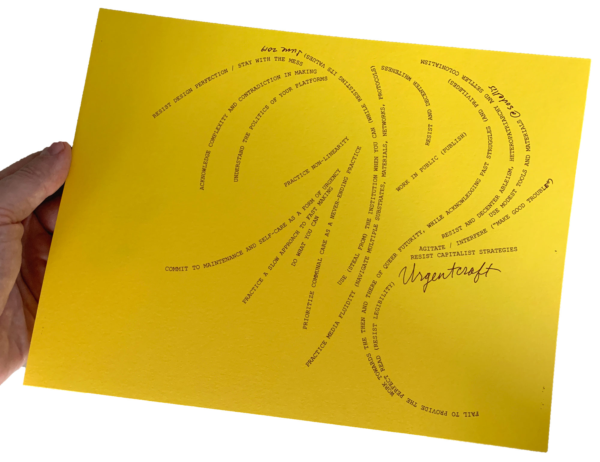

URGENTCRAFT (2019)

Risograph print, 2019
URGENTCRAFT is a set of principles that works to resist oppression-based design ideologies, especially in art and design education. URGENTCRAFT isn’t a manifesto, but rather a constellation of tactics — a series of incomplete observations. A note to self. A reminder that we can use art and design to loosen hegemonic power.
- Do what you can
- Use modest tools and materials
- Understand the politics of your platforms
- Practice media fluidity
- Work in public (self-publish!)
- Practice a slow approach to fast making
- Acknowledge complexity and contradiction in making
- Work towards the then and there of queer futurity (while acknowledging past struggles and privileges)
- Agitate/interfere (“make good trouble”)
- Dismantle white supremacy
- Resist, loosen, and dismantle ableism, heteropatriarchy, and settler colonialism
- Resist capitalist strategies
- Resist design perfection / stay with the mess
- Question linearity and other hierarchical structures
- Commit to maintenance and self-care as a form of urgency
- Fail to provide the perfect read (resist legibility)
- Use (steal from) the institution when you can (while resisting its values) (shout out to Fred Moten and Stefano Harney here for their concept of the undercommons)
- Prioritize communal care as a never-ending practice
The print was originally made to accompany the talk “URGENCRAFT,” delivered at the eyeo festival in June 2019 (and revised in April 2020, self-published and at The Creative Independent, in response to COVID-19). The talk outlines these principles and provides examples of artists and writers who manifest these ideas. It was reprinted as an edition of 200 in August 2019 and included in QUEER.ARCHIVE.WORK #3 for distribution at the NY Art Book Fair.
Print 8.5 in. x 11 in.
Edition of 200
Risograph printed in burgundy ink on Astrobright Solar Yellow 80# cover
Pawtucket, RI
August 2019